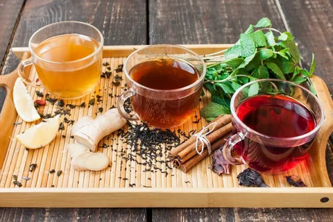
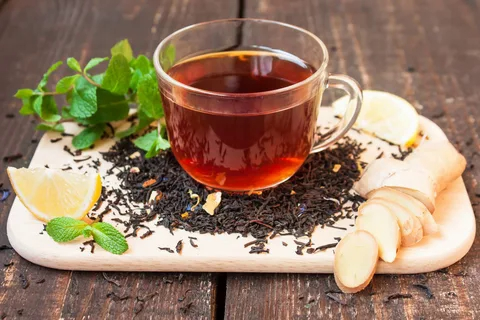

Существует множество видов чая: белый, красный, зеленый, желтый, черный.
Все они отличаются друг от друга и внешним видом, и цветом, и вкусом.
Также чай может быть ароматизирован с помощью эфирных масел (например,
бергамота) или цветков, ягод и кусочков фруктов.
Несмотря на то, что настоящим чаем может считаться только настой из чайного листа (камелии китайской), большинство людей привыкли называть этим словом и все остальные травяные напитки, созданные путем заваривания различных растений.
На этом сайте вы узнайте все про чай
